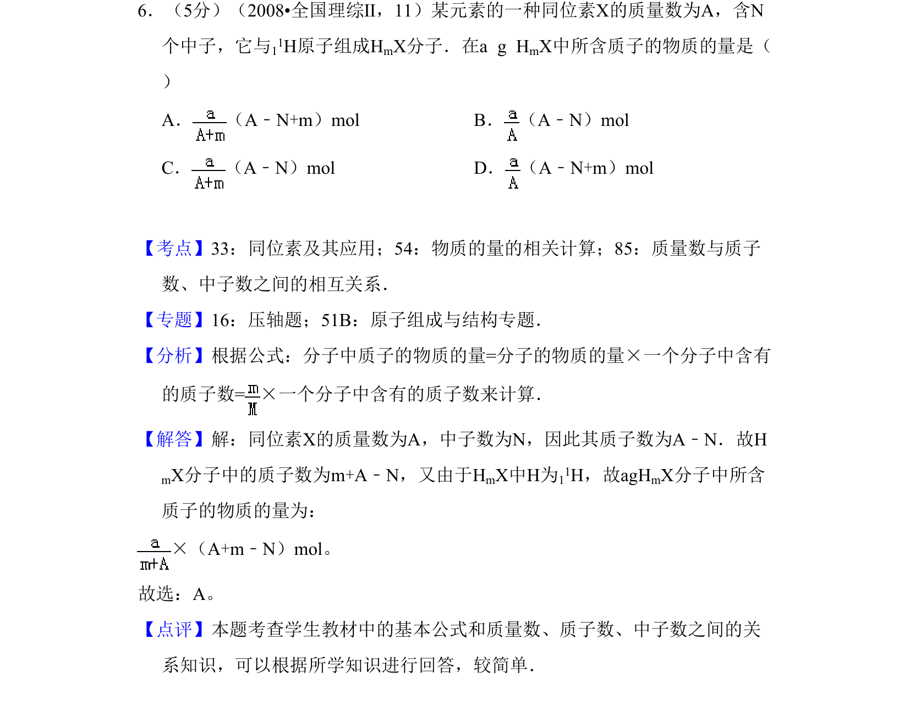
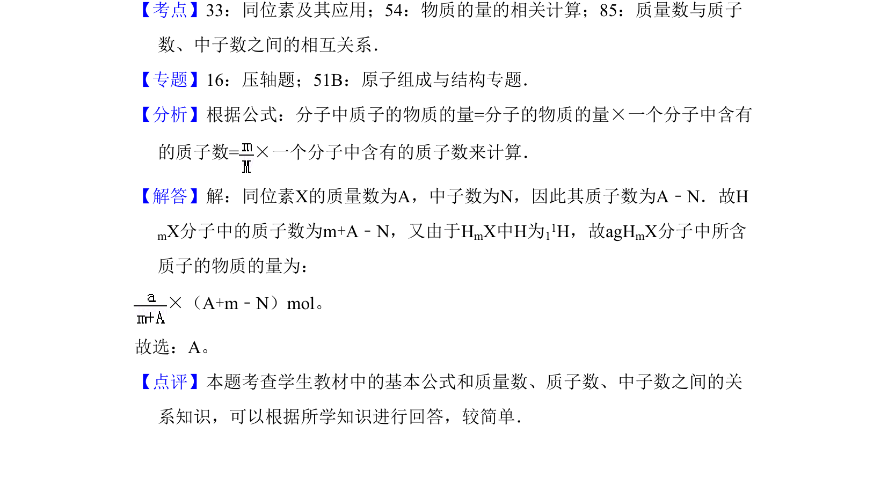

考点：质量数 质子数 中子数 物质的量

考查质量数、中子数、质子数关系及物质的量计算，求一定质量分子中所含质子的物质的量。

📄 原 PDF 第 5 页：
素材/真题/吉林/2008-2024·（吉林）化学高考真题/2008年高考化学试卷（全国卷Ⅱ）（解析卷）.pdf
6．（5分）（2008•全国理综Ⅱ，11）某元素的一种同位素X的质量数为A，含N 个中子，它与11H原子组成HmX分子．在a g H mX中所含质子的物质的量是（ ） A． （A﹣N+m）mol B． （A﹣N）mol C． （A﹣N）mol D． （A﹣N+m）mol
【考点】33：同位素及其应用；54：物质的量的相关计算；85：质量数与质子 数、中子数之间的相互关系．菁优网版权所有 【专题】16：压轴题；51B：原子组成与结构专题． 【分析】根据公式：分子中质子的物质的量=分子的物质的量×一个分子中含有 的质子数=×一个分子中含有的质子数来计算． 【解答】解：同位素X的质量数为A，中子数为N，因此其质子数为A﹣N．故H mX分子中的质子数为m+A﹣N，又由于HmX中H为11H，故agHmX分子中所含 质子的物质的量为： ×（A+m﹣N）mol。 故选：A。 【点评】本题考查学生教材中的基本公式和质量数、质子数、中子数之间的关 系知识，可以根据所学知识进行回答，较简单．